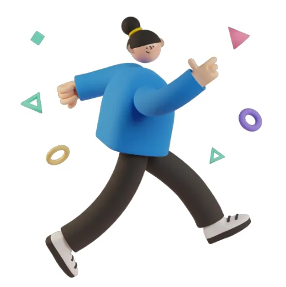

Case study
Optimizing Essential Services for Millions
I redesigned the customer virtual office of Edelap, an electricity provider in Argentina, as a mobile app. I reworked the billing and payment flows so paying a bill is the first thing users see.
- Product Design
- UX/UI Design
- Research
- Role
- Product Designer
- Methods
- Heatmaps, card sorting, heuristic review, interviews
From a button with 1% of the attention to the main action
In the original virtual office, “Pagar ahora” (Pay now) received about 1% of user attention. In the redesign, the balance and the payment button are the first things on the home screen.


The Challenge
The old virtual office had usability and accessibility problems. Before redesigning it, I wanted to know where users got stuck, how to measure it and which fixes would matter most.
- What are the critical friction points in the current user journey?
- How can we accurately measure the impact of these inefficiencies?
- Where should we focus our design efforts to drive the most value?
Users only looked at the amount due

Heat Map
It only recognizes the area of the amount to be paid and ignores the rest.

Attention Percentage
Doesn’t exceed 1% of attention

Clarity Metrics
Moderate difficulty
Card Sorting
39 participants sorted 12 account features into 6 categories. The results showed that the existing Information Architecture didn’t match how users group energy services, which validated a full navigation overhaul.
| Feature | Supply | Bills & Payments | Technical Support | Customer Service | Energy Advisor | Cost Simulator |
|---|---|---|---|---|---|---|
| Consumption | 71% | No value | No value | No value | 29% | No value |
| Supply | 71% | No value | 29% | No value | No value | No value |
| Address & ID | 43% | No value | 14% | 29% | No value | 14% |
| Account Statement | 43% | No value | 14% | 43% | No value | No value |
| Amount Due (Total) | 43% | 43% | No value | No value | 14% | No value |
| Download Invoice | No value | 100% | No value | No value | No value | No value |
| Digital Invoice | No value | 86% | No value | No value | 14% | No value |
| Direct Debit | 14% | 71% | No value | 14% | No value | No value |
| Last Invoice | 14% | 71% | No value | No value | No value | 14% |
| Last Invoice Period | 14% | 71% | No value | 14% | No value | No value |
| Amount Due by Cutoff Date | 29% | 57% | No value | 14% | No value | No value |
| Consumption Chart | 29% | No value | No value | No value | 43% | 29% |
Heuristic Evaluation
I audited the original virtual office against Nielsen’s usability heuristics and found 6 violations: 2 major and 4 minor. Each one became a concrete input for the redesign.
| Description | Location | Violation | Severity |
|---|---|---|---|
| Buttons across the screen vary significantly in size with no consistent visual relationship between them, creating confusion and making it difficult for users to orient themselves spatially. | Supply Screen |
| 3 Major |
| Using the same color for all buttons undermines visual hierarchy. The absence of a highlighted CTA leaves users without a clear sense of direction. The primary action should be reinforced with a distinctive color to differentiate it from secondary buttons on the same screen. | Supply Screen |
| 3 Major |
| A button placed where a title is expected, combined with inconsistent color and positioning compared to other buttons, renders it practically invisible to the user. | Header / User Summary |
| 2 Minor |
| Two checklist icons enclosed in a pill shape strongly resemble a toggle switch, but clicking reveals they are text labels. There is no effective visual feedback to clarify their behavior. Users already associate that pattern with a switch — there is no need to reinvent it. | Supply Screen / Housing Type / Digital Invoice |
| 2 Minor |
| Clicking the "Supply" button navigates to a screen showing a list of supplies under the user's name — the same information already available as a dropdown on the previous screen. No new information is provided, and the button only adds unnecessary visual clutter. | Supply / My Supplies |
| 2 Minor |
| When clicking the "Join" button, the label does not clearly communicate what action will be performed or what the user is committing to. The term lacks contextual meaning, creating ambiguity about the outcome of the interaction | Supply / Join / Popup |
| 2 Minor |
Interviews
The discovered Insights are valuable for improving the current product, for future versions or new services.
I get lost
"I rarely use the website because I almost always end up lost. I prefer other payments platforms.”
Carolina I can't find specific things
I don't like the way they handle the app. It's hard for me to find specific things. I usually use some other external app."
Alexander
What I found
Each problem pointed to a design opportunity:

Problem: There is no consistency in the information architecture.
Opportunity: Organize the menu by prioritizing the most used actions.
Problem: Doesn’t follow UI design pattern standards.
Opportunity: Provide clarity to the main CTA
Problem: Information in a language unfamiliar to the user.
Opportunity: Write text content employing a more user-friendly language.
Problem: There is no hierarchy of typography, colors or shapes.
Opportunity: Use of Color Theory, Gestalt, UX Writing
Let's dive into the UI design phase.
Based on what we found, we will gather all pieces in a clear, intuitive and accesible design system, layout and experience.
Wireframes

Typeface and Colors
Typeface
- p
- p - Lato Regular 16px (1rem)
- Label
- Label - Lato Medium 16px (1rem)
- H1
- H1 - Lato Bold 28px (1.75 rem)
- H2
- H2 - Lato Regular 24px (1.5 rem)
Colors
Components
By grounding the Information Architecture in user insights, I removed the guesswork from the UI phase and carried those decisions into a scalable component library.


Nested Settings: Address and supply management are nested within the profile to declutter the main interface.
Primary Focus: The balance due is the clear visual focal point, supported by helpers for immediate status clarity.
Ergonomic CTA: A full-width button placed right below the balance: a large, predictable target that is quick to reach and tap (Fitts’s Law).
Balanced Insights: Home screen shows a high-level YoY comparison, linking to detailed analytics for power users.
What changed after the redesign
Results from iterative usability testing of the redesigned app.
| Metric | Before | After |
|---|---|---|
| Clarity score | 54% | 96% |
| Attention on the pay button | ~1% | 12% |
| Time to pay a bill | 2 m | 40 s |
| Bill payment success rate | 40% | 65% |
- High User Satisfaction: Driven by a friction-free and intuitive mobile journey.
- Increased Adoption: Streamlined access led to higher engagement with digital services.
- Inclusive Design: Built toward WCAG 2.1 AA, with accessible contrast, readable type sizes and large touch targets.
- Reduced Friction: Paying a bill went from a hidden action to the main action on the home screen.
Looking back
What worked
Combining heatmaps with card sorting showed both where users looked and how they expected the menu to be organized.
What I’d do differently
Validate the new navigation with a tree test before moving to high-fidelity screens.
What I’d measure next
Bill payment completion rate and time to pay, tracked after launch.